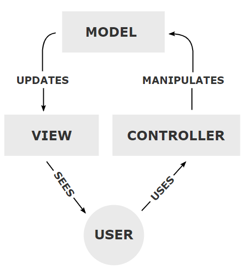
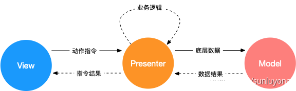
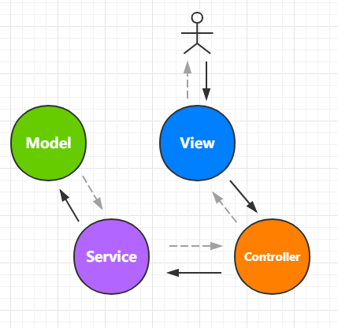

MVC/MVP/MVVM的个人理解
概述
MVC / MVP / MVVM 等软件领域的设计模式，相信大家就算不知道是什么，也听说过。对于这些设计模式，我们可以不知道，不了解，也不会影响日常的开发，但如果你想走的更远，这些是绕不过去的坎。前端作为软件行业的新兴领域，对这些设计模式在又该怎么理解，本文记录一下自己的理解，不一定都对，按需选用。
软件领域的发展史
变成领域发展最初是没有交互界面的，当时的“程序员”主要是一些数学家，他们依靠计算机实现复杂运算的。随着机器的发展和软件的需求扩大和细化，开始出现了用户界面（User Interface）。因为有了更高UI的需求，所以代码才正式被分化为描述做什么（业务逻辑）和有什么（UI）的两部分。
当需求变得庞大，解决方案也会变得庞大；当解决方案变得庞大，就会出现细分；软件从处理一件事务发展到了要处理许多事务，各事务间有包含、顺序、主次等等的关系，变得越来越复杂。因为数据与逻辑庞大了，所以数据与逻辑就分离了，然后事件和业务分离了，大致可以分化成以下原子：
- 界面
- 数据
- 事件
- 业务
MVC的出现
MVC全名是Model View Controller，它是Xerox PARC在二十世纪八十年代为编程语言Smalltalk－80发明的一种软件设计模式：
- Model（模型）表示应用程序核心（如数据库）
- View（视图）显示效果（HTML页面）
- Controller（控制器）处理输入（业务逻辑）
首先要明确的一点就是：MVC只是一个设计上的指导原则，并没有明确的架构。一个经典的设计模式如下：

MVC 模型有很多变种和数据流动方式，最传统的 MVC 模型把视图渲染和数据处理做了隔离，通过控制器接收 View 操作，传递给数据模型，数据 ready 后由数据模型驱动视图渲染。但因为 View 的更新由 Model 处理，所以 Model 难免要和 View 的实现耦合，于是就有了改良版MVP的出现。
MVP来了
MVP 是 Model View Presenter 的缩写，相比MVC而言，View与Model没有变化，将Controller换成了Presenter，同时改变了通信方向

View 和 Model 完全隔离，Model 不再负责业务逻辑和视图变化，只负责底层数据处理。
譬如，在Egg.js中，它的模型设计更贴近MVP：
egg-project
├── package.json
├── app.js (可选)
├── agent.js (可选)
├── app
| ├── router.js
│ ├── controller
│ | └── home.js
│ ├── service (可选)
│ | └── user.js
│ ├── middleware (可选)
│ | └── response_time.js
│ ├── schedule (可选)
│ | └── my_task.js
│ ├── public (可选)
│ | └── reset.css
│ ├── view (可选)
│ | └── home.tpl
│ └── extend (可选)
├── config
└── test
- View：作为用户的视图表现部分，常见的展示形式如浏览器作为载体的网页、原生APP应用界面、桌面应用界面等，用于提供用户界面以便收集、响应用户行为产生的数据；
- Controller：作为控制器层部分，控制用户界面（View）的数据流转途径，主要行为包含接收用户数据请求、发送请求至业务层（Service）、获取业务层（Service）数据响应，将响应数据发送至用户界面（View），或生成相应的模板界面发送至用户；
- Service：作为业务处理层部分，主要负责收集及对数据进行相应的运算处理，主要行为包含收集控制器请求数据、数据有效性验证、运算、请求数据模型（Model）、接收数据模型（Model）响应消息、响应结果至控制器等；
- Model：作为数据模型层部分，主要用于将数据持久化（OUT）、查询持久化数据（IN），常见行为如对数据库进行操作、缓存数据库数据等；

可以看出 MVP 相对于 MVC 数据与视图分离做的更为出色，在大部分时候使用 MVC 其实是在使用 MVP。
MVVM的时代
MVVM由微软架构师Ken Cooper和Ted Peters开发，它是马丁·福勒的PM（Presentation Model）设计模式的变体

MVVM 也被称为 model-view-binder。MVVM 中，VM 是 ViewModel。View 与 ViewModel 之间采用数据绑定，绑定是双向的，避免了开发人员写一些同步 ViewModel 和 View 的重复逻辑。通过数据绑定，View 发生变化会自动反映到 ViewModel，ViewModel 产生的变化也会自动更新 View。
对于Vue.js，普遍认为他是基于MVVM设计的，我们一般都是这么划分的：
- Model：对应的是组件中的 data、props 属性
- View：组件中 template 的部分
- ViewModel。继承自 Vue 类的组件实例
但官网有这么一句话：

对于这个问题，可以参考这里：为什么尤雨溪尤大说VUE没有完全遵循MVVM？。
结束语
架构是一个演变的过程。它指的不是随着历史的演变，而是随着项目演变的。其实不比过于纠结到底是MVC,MVP,还是MVVM, 对于这种设计思想可以统称为MV*模式，在不同的项目中，能救解决实际问题他就有可能成为最佳实践的范本。
并且在实际框架中，组成成分之间都不会泾渭分明，几种组成成分之间常常有难以划分的模糊地带。